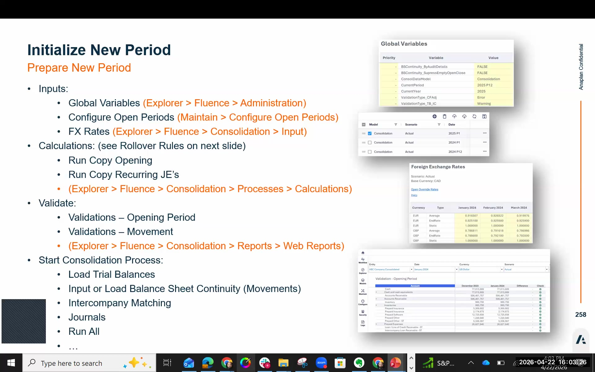
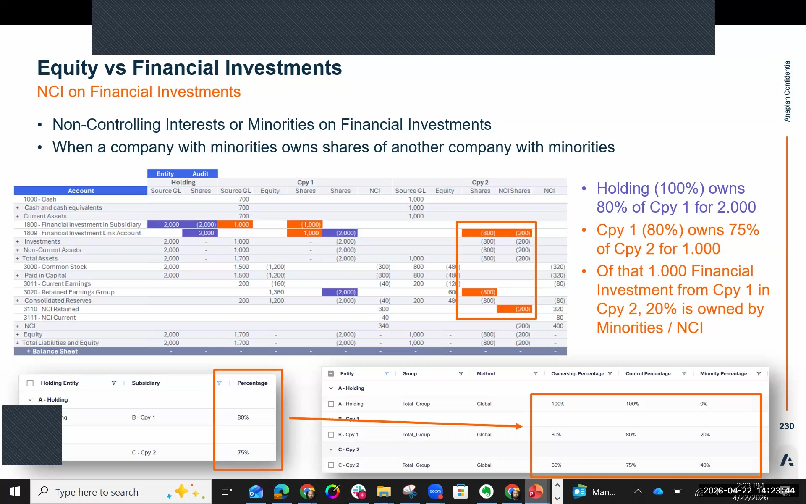

Period Initialization
Opening a new fiscal period: global variables, open periods, FX rates, Copy Opening, and validation
The Period Initialization Sequence
Every new fiscal period — whether a month-end, quarter-end, or year-end — requires a specific sequence of steps before data can be loaded and the consolidation run. Skipping or reordering steps will produce errors or incorrect results.
Copy Opening must only be run at the very start of the cash flow process (period initialization). Running it after balance sheet continuity data has been entered will replace all movement data — wiping any entries already made. This is a one-way destructive operation. Run it once at the beginning; never mid-cycle.
Complete Period Initialization Sequence
Update Global Variables
Navigate to Configure → Global Variables. Update the Current Year and Current Period to the new period (e.g., Year = 2025, Period = P1).
Global Variables drive the defaults used throughout FCR — report filters, journal date defaults, and process selectors all reference this setting. Update this first before any other step.

Configure Open Periods
Navigate to Configure → Open Periods. Add a new row for each period you want to open (e.g., 2025P1 and 2025P2). Click the + button or duplicate an existing row.
Only periods listed in the Open Periods table accept data loads. If a period is not open, import definitions will fail or silently discard data. The new period must be added to this table before Copy Opening can write to it.

To close a period at year-end, simply delete its row from the table. Multiple periods can be open simultaneously — this is expected and normal during reporting cycles.
Enter Exchange Rates for New Periods
Navigate to Maintain → Foreign Exchange Global Rates. Enter End Rate and Average Rate for the new period(s) for all non-base reporting currencies.
For FX rate overrides at the account/entity level (e.g., specific accounts that use a negotiated rate), use the Override Rates web form.
FX Rate Overrides (If Required)

If any entities or accounts require non-standard exchange rates (e.g., hedged rates for specific balance sheet items), enter them via the Override Rates web form in Maintain.
To see the + (Add) button in the Override Rates web form, you must first go to Security settings and set Consolidation → All. Without this setting, the form opens in read-only mode with no visible add button. This is a new behavior in the current release.
When entering override rates: fill in Entity, Date, Scenario (Actuals), Account, and Rate. Leave Cost Center, Audit, and Product fields empty.
Run Copy Opening
Navigate to Consolidation → Processes. Run the Copy Opening calculation rule. This process copies the closing balances from the prior period (2024 P12) into the opening balances of the new period (2025 P1).
Copy Opening is driven by the Rollover Rules — pre-configured (and customizable) rules that govern how period-end balances roll forward. These rules are exportable, importable, and duplicatable like all other FCR configuration objects.
Run Copy Recurring Journal Entries
If any journals were flagged as recurring in prior periods, run the Copy Recurring Journal Entries process. This rolls standing reclassifications and adjustments forward to the new period automatically.
Review the copied journals before posting — confirm they are still appropriate for the new period.
Load Trial Balance Data
Load the new period's trial balance for all entities via the data integration workflow (same as prior periods — see the Data Integration page). Entities with new 2025 P1 data (e.g., London and Paris in the workshop model) will have source files ready in the exercise folder.
You do not need to create a new workflow for each period — reuse the existing import definitions with the updated period reference from the source file's date column.
Run All (Consolidation)
Navigate to Consolidation → Processes and run Run All for the new period. This executes currency conversion, consolidation rules, eliminations, and all calculation processes in the correct sequence.
Run Validation Reports
After consolidation, run both validation reports to confirm data integrity:
- Validations Open Period Report — checks opening balances for the new period. Green checkmarks = all opening balances carried forward correctly. Red X = an opening balance discrepancy requires investigation.
- Movement Validations Report — checks balance sheet movement integrity. Some red X's on a first run are expected if movements are incomplete; investigate and resolve before close.
Green checkmarks on both reports indicate the period is ready for processing. Red X's must be investigated — they indicate data quality issues that will compound in future periods if left unresolved.
Rollover Rules
Rollover rules define exactly how prior period closing balances map to opening balances in the new period. FCR includes pre-configured rollover rules out-of-the-box. You can add custom rules for non-standard treatment.
⚙️ Rule Capabilities
- Export, import, and duplicate — same as all FCR rules
- Custom rollover rules can be added via the Maintain menu
- Rules can roll different account types with different behaviors
- Edit → Run Copy Opening → validates the rollover
📋 Typical Rollover Behavior
- Balance sheet accounts: closing → opening in new period
- P&L accounts: reset to zero (new period starts fresh)
- Retained earnings: prior year net income rolls to retained earnings
- Cash flow accounts: handled separately via cash flow configuration
Period Naming Convention
FCR uses a consistent period naming format across all configurations and reports:
| Format | Example | Meaning |
|---|---|---|
YYYY P## |
2024 P12 | Actuals, year 2024, period 12 (December) |
YYYY P01 |
2025 P01 | Actuals, year 2025, period 1 (January) |
YYYY B## |
2025 B12 | Budget, year 2025, period 12 |
Year-end initialization follows the same steps as a regular month-end, with one addition: the Global Variables year must be incremented. P&L accounts reset to zero automatically via the rollover rules — no manual intervention is needed. The first period of the new year should show zero P&L opening balances and correct balance sheet opening balances from the prior year closing.